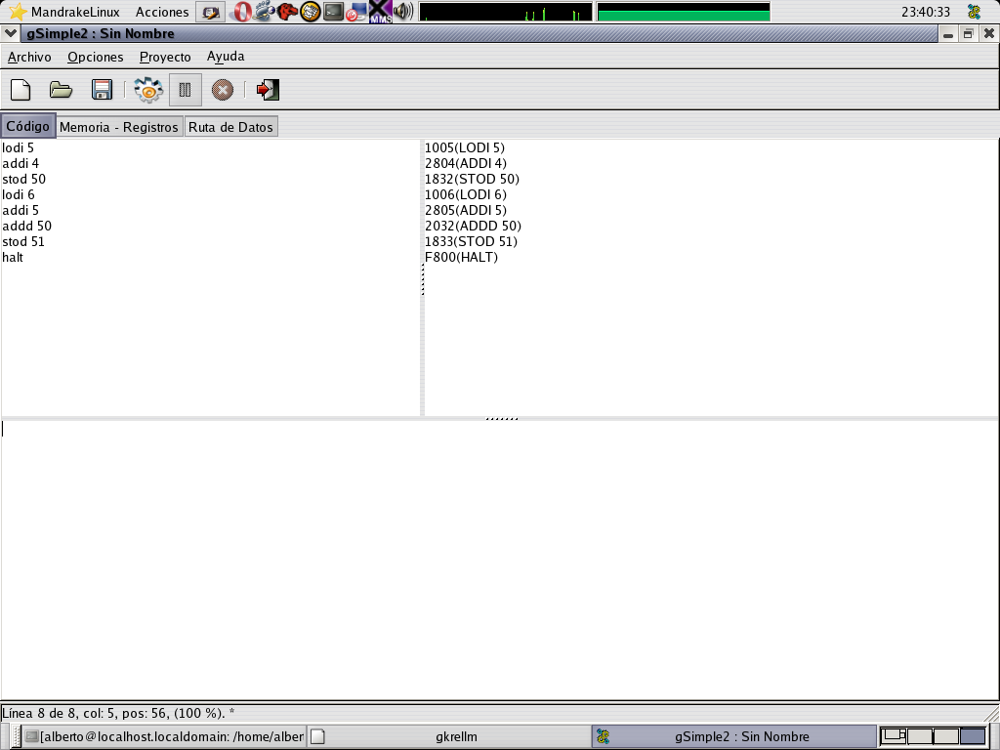
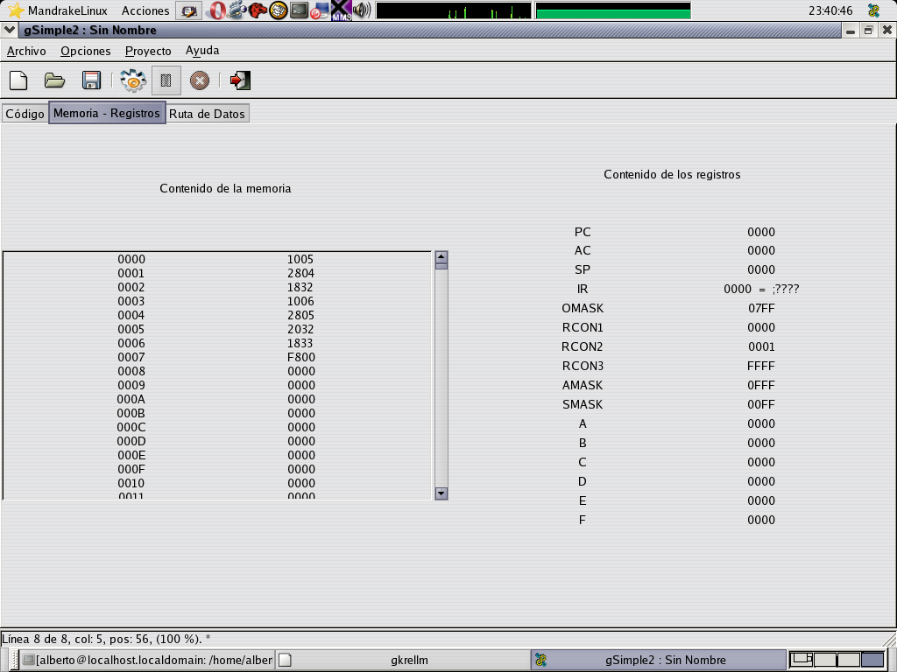
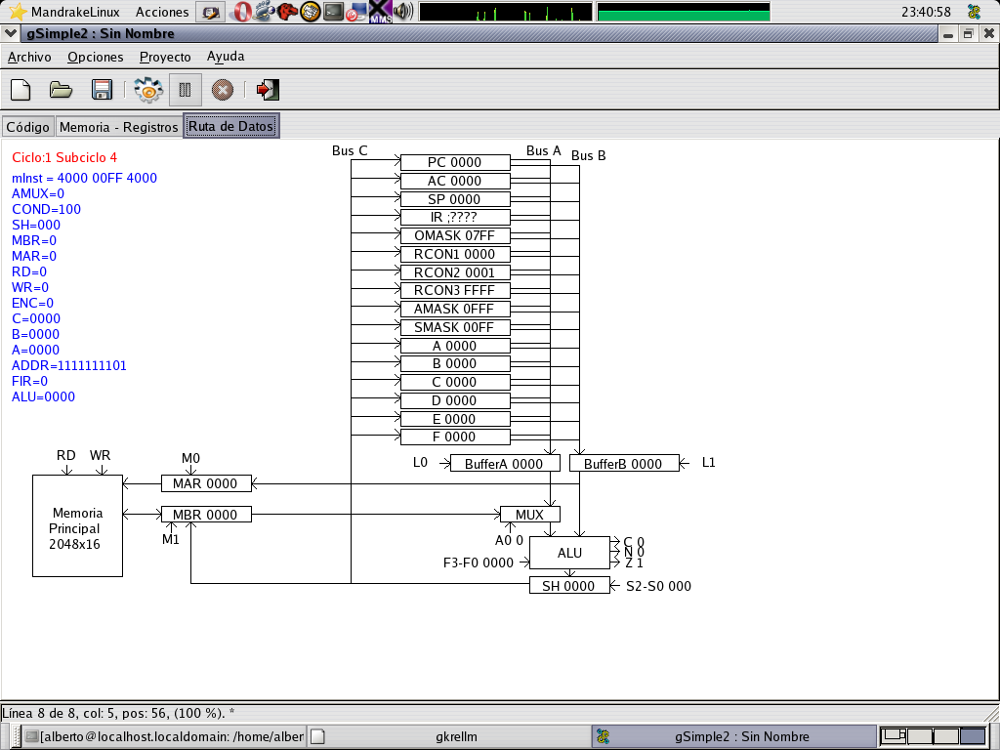
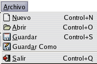
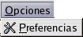
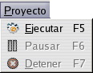
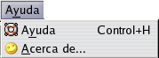
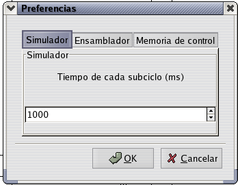
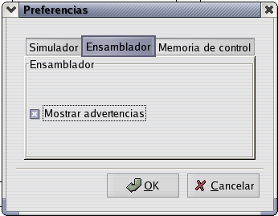
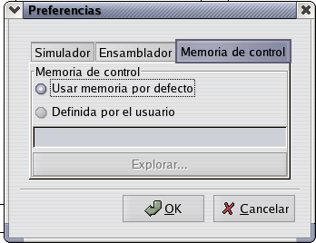

Panel de edición de código.
En el editor de la izquierda se introducirá el código en ensamblador.
El editor de la derecha se utiliza para mostrar la salida en hexadecimal del código generado.
El editor inferior sirve para mostrar los mensajes de error y las advertencias.

Panel para mostrar los registros y la memoria
En este panel se nos muestran los valores que tiene la memoria y los registros.

Panel para mostrar la simulación.
En este panel se muestra la ruta de datos del Simple2. Se muestran los elementos que están activos en cada subciclo, así como los valores de las entradas y los registros más importantes.

Menú archivo

Nuevo
Crea un nuevo documento
ensamblador.
Abrir
Carga un documento
ensamblador desde un archivo.
Guardar
Guarda el documento de
ensamblador que se está editando con su nombre actual. Si el
documento no tiene ningún nombre, se le preguntará por
uno.
Guardar como...
Guarda el
documento ensamblador que se está editando, mostrando primero
un diálogo para darle un nuevo nombre.
Salir
Sale de la aplicación.
Menú opciones

Preferencias
Muestra el diálogo
de preferencias, en el que podrá establecer el comportamiento
de la aplicación.
Menú proyecto

Ejecutar
Compila el código
ensamblador y, si es correcto, comienza la simulación.
Pausar
Una vez que la
simulación está en marcha, la pausa. Para reanudarla
es necesario pulsar otra vez sobre pausar.
Detener.
Detiene totalmente la
simulación.
Menú ayuda

Ayuda.
Muestra la ayuda del
programa.
Acerca de...
Muestra
información sobre la aplicación y sus autores
Diálogo de configuración.
En él podrá establecer el comportamiento de la aplicación.
SIMULADOR: En esta pestaña podrá configurar el tiempo del subciclo de la ruta de datos.

ENSAMBLADOR: En esta pestaña podrá indicar si desea que se muestren o no las advertencias generadas al ensamblar el código.

MEMORIA DE CONTROL: En esta pestaña podrá indicar la memoria de control a utilizar. Puede seleccionar la que viene integrada en el programa, o indicar la ruta del fichero que la contiene.

*Nota: los cambios tendrán efecto la próxima vez que inicie una simulación (no afectan a la simulación en curso).